REGRESAR A LA PAGINA PRINCIPAL
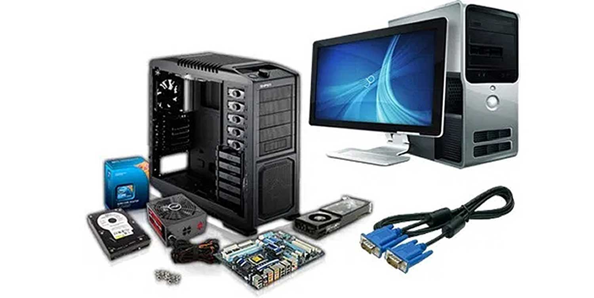
Estas arquitecturas se desarrollaron en las primeras computadoras electromecanucas y de tubos de vacio. Aun son usadas en procesadores empotrados de gama baja y son la base de la mayoria de las arquitecturas modernas.
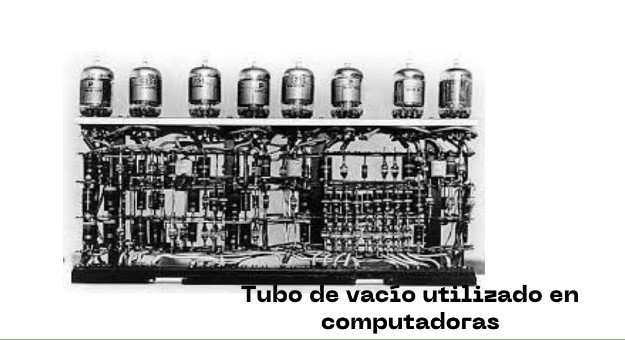
ARQUITECTURA MAUCHLY-ECKERT (VON NEWMAN).Consiste en una unidad central de proceso que se comunica a través de un solo bus con un banco de memoria en donde se almacenan tanto los códigos de instrucción del programa, como los datos que serán procesados por este.
Son programas que toman como entrada un archivo de texto conteniendo codigo fuente y generan como datos de salida,el código máquina que corresponde a dicho código fuente (Son programas que crean o modifican otros programas).
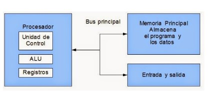
Estos datos de salida pueden ejecutarse como un programa posteriormente ya que se usa la misma memoria para datos y para el código del programa. Una desventaja es que el bus de datos y direcciones único se convierte en un cuello de botella por el cual debe pasar toda la información que se lee de o se escribe a la memoria, obligando a que todos los accesos a esta sean secuenciales. Limita el grado de paralelismo (acciones que se pueden realizar al mismo tiempo) y por lo tanto, el desempeño de la computadora.
ARQUITECTURA HARVARD. El programa se almacena como un código numérico en la memoria, pero no en el mismo espacio de memoria ni en el mismo formato que los datos. El hecho de tener un bus separado para el programa y otro para los datos permite que se lea el código de operación de una instrucción, al mismo tiempo se lee de la memoria de datos los operados de la instrucción previa.
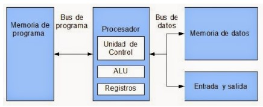
ARQUITECTURAS SEGMENTADAS. Buscan mejorar el desempeño realizando paralelamente varias etapas del ciclo de instrucción al mismo tiempo. El procesador se divide en varias unidades funcionales independientes y se dividen entre ellas el procesamiento de las instrucciones. Un procesador simple tiene un ciclo de instrucción sencillo consistente solamente en una etapa de búsqueda del código de instrucción y en otra etapa de ejecución de la instrucción.
Cada una de estas etapas se asigna a una unidad funcional diferente, la búsqueda a la unidad de búsqueda y la ejecución a la unidad de ejecución. Estas unidades se comunican por medio de una cola de instrucciones en la que la unidad de búsqueda coloca los códigos de instrucción que leyó para que la unidad de ejecución los tome de la cola y los ejecute. La unidad de búsqueda comenzaría buscando el código de la primera instrucción en el primer ciclo de reloj. Durante el segundo ciclo de reloj, la unidad de búsqueda obtendría el código de la instrucción 2, mientras que la unidad de ejecución ejecuta la instrucción 1 y así sucesivamente.
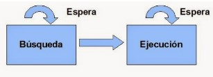
ARQUITECTURAS MULTI-PROCESAMIENTO. Cuando se desea incrementar el desempeño más alla de lo que permite la técnica de segmentación del cauce (limite teórico de una instrucción por ciclo de reloj), se requiere utilizar más de un procesador para la ejecución del programa de aplicación.
Las CPU multiprocesamiento se clasifican en:
SISO:(Single Instruction, Single Operand) computadoras Monoprocesador
SIMO :(Single Instruction, Multiple Operand) procesadores vectoriales, Exenciones MMX
MISO :(Multiple Instruction, Single Operand) No implementado
MIMO :(Multiple Instruction, Multiple Operand) sistemas SMP, Clusters, GPUs
Todos tienen derechos similares en cuanto al acceso a la memoria y periféricos y ambos son administrados por el sistema operativo.
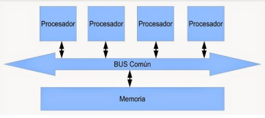
Los Clústers son conjuntos de computadoras independientes conectadas en una red de área local o por un bis de interconexión y que trabajan cooperativamente para resolver un problema. Es clave en su funcionamiento contar con un sistema operativo y programas de aplicación capaces de distribuir el trabajo entre las computadoras de la red.
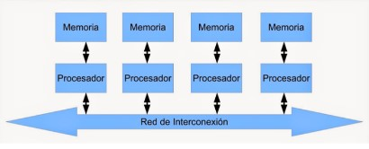
Además de las arquitecturas clasicas mencionadas anteriormente, en la actualidad han aparecido arquitecturas híbridas entre la Von Newmann y la Harvard, buscando conservar la flexibilidad, pero mejorando el rendimiento. Los programas cada vez más grandes y complejos demandan mayor velocidad en el procesamiento de información como lo que implica la elección de microprocesadores más rápidos y eficientes.
Para el diseño de un microprocesador debemos de visualizar y decidir cuál será su juego de instrucciones. La decisión por dos razones, primero, el juego de instrucciones decide:
-El diseño físico del conjunto.
-Cualquier operación que deba ejecutarse en el microprocesador deberá poder ser descrita en términos de un lenguaje de estas instrucciones.
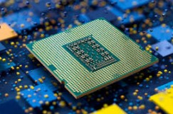
ARQUITECTURA CISC: Es un modelo de arquitectura en donde los microprocesadores tienen un conjunto de instrucciones que caracterizan por ser muy amplio y permitir operaciones complejas entre operandos, situadas en la memoria o en los registros internos.
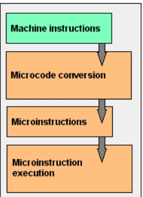
ARQUITECTURA RISC: Reduced Instruction Set Computer es un tipo de un microprocesador con las siguientes características fundamentales:
-Instrucciones de tamaño fijo y presentado en un reducido número de formatos
-Sólo las instrucciones de carga y almacenamiento acceden a la memoria de datos
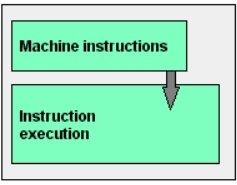
CISC: Este tipo de arquitectura dificulta el paralelismo entre instrucciones, por lo que, en la actualidad como la mayoría de los sistemas CISC de alto rendimiento implementar un sistema que convierte dichas instrucciones complejas en varias instrucciones simples del tipo RISC, llamadas generalmente microinstrucciones.
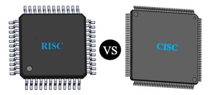
RISC: Los procesadores con tecnología RISC trabajan más rápido al utilizar menos ciclos de reloj para la ejecución de las instrucciones. Además utiliza un sistema de direcciones no destructivas en RAM, significa que a diferencia de CISC, RISC conserva después de realizar sus operaciones en memoria a los dos operandos y su resultado como reduciendo la ejecución de nuevas operaciones. Y cada instrucción puede ser ejecutada en un solo ciclo del CPU.
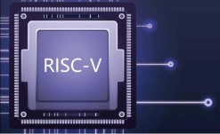
ALU: Aritmetic Unit Logic, es un circuito digital que realiza como su nombre lo indica las operaciones aritméticas y lógicas entre los datos de un circuito; suma, resta, divide y multiplica, así como establece comparaciones lógicas a través de las condicionales lógicas " si ", " no "," o ".
Requiere de un mecanismo de control que le permita saber el tipo de operación a realizar. Deberá contar con un circuito de control que le permita:
-Identificar la operación a realizar
-Administrar los recursos internos
-Generar las banderas
Unidad de Control: Circuito secuencial que implementa el denominado "ciclo de instrucción", permitiendo acceder a la siguiente instrucción de un programa, leer sus operandos, efectuar la operación indicada en la ALU y guardar el resultado de la misma.
Funciones de la unidad de control:
-Decodificaciones de las instrucciones
-Sincronización de las tareas
-Administración de los buses internos de comunicación del microprocesador
Registros: Los registros que encuentran dentro de cada procesador su función principal es almacenar los valores de cada uno de los datos, comandos, instrucciones o estados binarios que son de los que ordenan qué datos deben procesarse, así como la forma en la que se debe procesar o realizar.
En un procesador encontramos espacios con una capacidad que oscila entre 4 y 64 bits, porque cada registro debe tener un tamaño suficiente para contener una instrucción. En el caso de que un ordenador de 64 bits, cada registro debe tener un tamaño de 64 bits. La información es recibida generalmente en código binario, procedente de las aplicaciones para, después, procesarlos de una forma determinada.
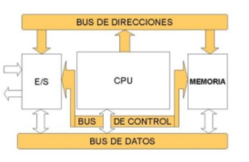
Buses: Consta de un camino que permite comunicar selectivamente un cierto número de componentes o dispositivos, de acuerdo a unas ciertas reglas o normas de conexión. Incluye los conceptos de enlace y conmutador, ya que permite en cada momento seleccionar los dispositivos que se conectan a través suyo.
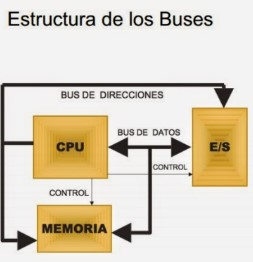
MEMORIA FISICA: Es la memoria real instalada en el hardware de la computadora. Incluye componentes como la memoria RAM y la memoria caché.
ADMINISTRADOR DE MEMORIA: Es el componente del sistema operativo que se encarga de gestionar el uso de la memoria. Se asegura de que los programas reciban la cantidad adecuada de memoria y asigna y libera espacio cuando sea necesario.
MEMORIA VIRTUAL: Es una extensión de la memoria RAM que utiliza espacio en el disco duro para simular una memoria adicional. Permite que las aplicaciones utilicen más memoria de la que está físicamente presente.
ASIGNACION DE MEMORIA: Es el proceso de reservar una porción de la memoria para que un programa pueda utilizarla. Puede realizarse durante el inicio del programa (asignación estática) o durante la ejecución (asignación dinámica).
FRAGMENTACION: Puede haber fragmentación en la memoria cuando se desperdicia espacio debido a la asignación y liberación repetida de bloques de memoria. Hay dos tipos, fragmentación interna (ocurre en asignación estática) y fragmentación externa (ocurre en asignación dinámica).
PAGINACION Y SEGMENTACION: Son técnicas utilizadas para administrar la memoria en sistemas operativos. La paginacion divide la memoria en páginas del mismo tamaño, mientras que la segmentación divide la memoria en segmentos de diferentes tamaños.
GESTION DE MEMORIA: Involucra llevar un registro de qué partes de la memoria están en uso y cuáles están libres. Esto incluye la asignación, liberación y reubicación de bloques de memoria.
SWAP: Es el proceso de mover partes de la memoria de la RAM a la memoria virtual en el disco duro cuando la RAM está llena. Ayuda a liberar espacio en la RAM para nuevos datos.
La memoria principal semiconductora, también conocida como memoria principal de estado sólido, es una categoría de memoria de computadora que utiliza dispositivos semiconductores para almacenar datos de forma electrónica. A diferencia de las memorias magnéticas tradicionales, como los discos duros, que utilizan medios magnéticos para almacenar datos, la memoria principal semiconductora utiliza circuitos y transistores para retener y acceder a la información de manera mucho más rápida.
Memoria RAM (Random Access Memory): Es la memoria volátil que se utiliza para almacenar datos y programas en uso activo. La RAM permite a la CPU acceder rápidamente a los datos necesarios para la ejecución de programas.
Memoria Cache: La memoria caché es una forma de memoria principal semiconductora utilizada para almacenar datos que la CPU necesita acceder con frecuencia. La memoria caché es más rápida que la memoria RAM convencional y ayuda a mejorar el rendimiento del sistema.
La memoria caché, comúnmente conocida como "caché" ,es una forma de memoria de alta velocidad que se encuentra entre la memoria RAM (principal) y la unidad central de procesamiento (CPU) en un sistema informático. Su objetivo principal es mejorar el rendimiento al almacenar temporalmente datos y programas que la CPU utiliza con frecuencia. La caché actúa como un búfer rápido que permite a la CPU acceder rápidamente a los datos que necesita, reduciendo los tiempos de espera y mejorando la eficiencia en la ejecución de instrucciones.
La caché opera utilizando el principio de localidad, que sugiere que un programa tiende a acceder a un conjunto limitado de datos y programas en un período corto. Cuando la CPU necesita datos, primero verifica si están en la caché. Si es así (lo que se llama "acceso a caché"), la CPU puede acceder a los datos mucho más rápido que si tuviera que acceder a la memoria principal. Si los datos no están en caché (lo que se llama "fallo de caché"), se busca en la memoria principal y se carga en la caché para futuros accesos.
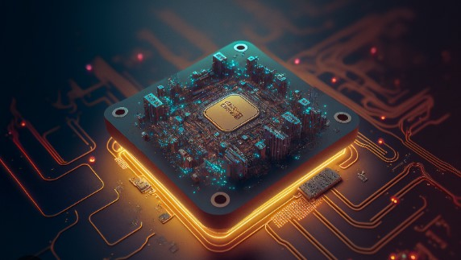
Los dispositivos de entrada/salida son componentes que permiten la comunicación entre una computadora y el mundo exterior. Estos dispositivos se utilizan para ingresar datos a la computadora (entrada) o enviar datos desde la computadora (salida).
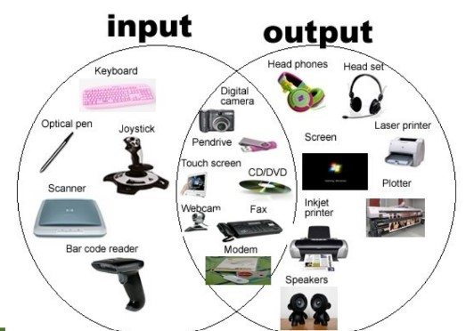
Los módulos E/S son componentes esenciales en la arquitectura de una computadora que facilitan la comunicación entre la Unidad Central de Procesamiento (CPU) y los dispositivos de entrada/salida (E/S). Su función principal es gestionar la transferencia de datos entre la CPU y los dispositivos externos, garantizando que la comunicación sea eficiente y confiable.
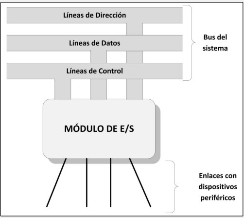
Ejemplos de Modulos de E/S
Controladores de Disco Duro: Los controladores de disco duro son módulos E/S diseñados específicamente para gestionar la lectura y escritura de datos en unidades de disco duro. Controlan cómo se leen y escriben los datos en el disco y proporcionan una interfaz para que la CPU interactúe con el disco.
Tarjeta de Red: En una tarjeta de red, el módulo E/S maneja la comunicación entre la computadora y una red, ya sea mediante conexiones por cable (Ethernet) o inalámbricas (Wi-Fi). El controlador de la tarjeta de red permite que la CPU envíe y reciba datos a través de la red.
Controlador USB: Los controladores USB son módulos E/S que permiten a la CPU comunicarse con dispositivos USB, como teclados, ratones, unidades flash y otros dispositivos periféricos. Controlan la transferencia de datos y la administración de energía de los dispositivos conectados.
La E/S (Entrada/Salida) programada se refiere a un enfoque en la informática donde el programa controla directamente las operaciones de entrada y salida de datos hacia y desde los dispositivos periféricos. Esto significa que el programa es responsable de leer y escribir datos en los dispositivos de manera manual en lugar de dejar que el sistema operativo gestione automáticamente estas operaciones.
Entrada/Salida Programada (Programmed I/O): En este enfoque, el programa envía comandos directamente a los dispositivos periféricos (como discos duros, impresoras o teclados) para realizar operaciones de lectura o escritura de datos. El programa espera hasta que la operación se complete antes de continuar su ejecución.
Control Total: La E/S programada proporciona al programa un mayor control sobre los dispositivos periféricos, lo que puede ser útil en situaciones donde se requiere un control preciso o personalizado de la comunicación con estos dispositivos.
La E/S mediante interrupciones es un método de gestión de dispositivos de entrada/salida en una computadora que permite que los dispositivos de E/S interrumpan la CPU cuando están listos para transmitir datos o cuando se produce una condición especial. En lugar de que la CPU espere activamente y controle directamente cada operación de E/S, los dispositivos pueden solicitar la atención de la CPU mediante una interrupción, lo que libera a la CPU para realizar otras tareas mientras se maneja la operación de E/S en segundo plano.
El Acceso Directo a la Memoria (DMA) es una técnica utilizada en arquitectura de computadoras que permite a dispositivos de entrada/salida (E/S) transferir datos directamente entre ellos y la memoria principal de la computadora sin la intervención constante de la Unidad Central de Procesamiento (CPU). Esta técnica es especialmente útil para acelerar las operaciones de E/S y liberar a la CPU para realizar otras tareas.
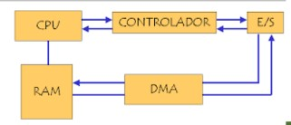
Los canales y procesadores de E/S son componentes fundamentales en la arquitectura de computadoras que se utilizan para gestionar múltiples dispositivos de entrada/salida (E/S) de manera eficiente y coordinada. Estos componentes permiten que la computadora maneje un gran número de operaciones de E/S de manera concurrente sin sobrecargar la Unidad Central de Procesamiento (CPU).
Los canales y procesadores de E/S son unidades de hardware especializadas diseñadas para facilitar y acelerar la comunicación entre la CPU y múltiples dispositivos de E/S. Tienen la capacidad de ejecutar operaciones de E/S de manera independiente de la CPU principal y pueden administrar varias operaciones de E/S al mismo tiempo.
Ejemplos de canales y procesadores E/S
Canal de Control de Disco (DCC - Disk Control Channel): En sistemas de almacenamiento de datos, el DCC es un canal de E/S especializado que administra las operaciones de lectura y escritura en unidades de disco duro. Permite un acceso eficiente y rápido a los datos almacenados en discos.
Canal de Red (Network Channel): En sistemas de comunicación en red, un canal de red se encarga de gestionar la transferencia de datos entre la CPU y las tarjetas de red. Puede manejar múltiples conexiones de red de manera concurrente.
Ventajas de los Canales y Procesadores de E/S
Mayor Eficiencia: Permiten que la CPU principal se libere de la carga de gestionar operaciones de E/S individuales, lo que mejora la eficiencia general del sistema.
Gestión Concurrente: Pueden manejar múltiples operaciones de E/S simultáneamente, lo que es esencial en sistemas de alto rendimiento con numerosos dispositivos de E/S.
Optimización de Recursos: Ayudan a optimizar el uso de recursos de E/S al coordinar de manera efectiva las transferencias de datos.
Mejor Rendimiento: Contribuyen significativamente al rendimiento general de la computadora al acelerar las operaciones de E/S y permitir una mayor concurrencia.
Un bus local es un bus informático que se conecta directamente, o casi directamente, desde la unidad central de procesamiento (CPU) a una o más ranuras en el bus de expansión . La importancia de la conexión directa a la CPU es evitar el cuello de botella creado por el bus de expansión, proporcionando así un rendimiento rápido. Hay varios buses locales integrados en varios tipos de computadoras para aumentar la velocidad de transferencia de datos
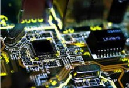
El bus es un sistema digital que transfiere datos entre los componentes de un ordenador o entre ordenadores. Está formado por cables o pistas en un circuito impreso, dispositivos como resistencias y condensadores además de circuitos integrados.
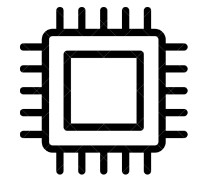
El bus de direcciones es el canal del microprocesador, que es independiente del bus de datos y que es donde se establece la dirección de memoria del dato que se está transmitiendo. Este bus representa el conjunto de líneas eléctricas que se necesitan para establecer una dirección.
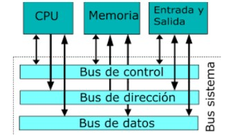
Es un canal de comunicación que se utiliza para conectar varios componentes de un sistema. Se trata de un medio por el cual los dispositivos intercambian información y se coordinan entre sí para realizar tareas específicas. El bus de control permite a los dispositivos comunicarse, compartir información y recibir instrucciones.
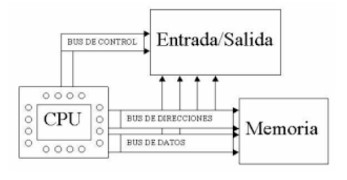
Antes cada fabricante definía sus buses lo cual dificultaba mucho la comunicación entre distintos componentes. Para facilitar la interacción entre componentes de distintos fabricantes los buses se han normalizado. Siguen un estándar acordado previamente.
Estandar:
Protocolos de transmisión de datos.
QR Velocidades y temporización de las transferencias.
QR Anchuras de los sub-buses.
Sistema físico de conexión.
Este es un modo de operación específico en las CPUs x86 que se utiliza en el proceso de inicio de la computadora y la ejecución de sistemas operativos antiguos, como MS-DOS. En este modo, la CPU tiene acceso directo a la memoria y opera en un entorno de 16 bits. La arquitectura 286 introdujo el modo protegido, permitiendo, entre otras cosas, la protección de la memoria a nivel de hardware. Sin embargo, usar estas nuevas características requirió instrucciones de software adicionales no necesarias previamente.
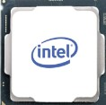
El modo protegido es un modo operacional de los CPUs compatibles x86 de la serie 80286 y posteriores. El modo protegido tiene un número de nuevas características diseñadas para mejorar las multitareas y la estabilidad del sistema, como protección de memoria, y soporte de hardware para memoria virtual así como de conmutación de tareas El modo protegido también tiene soporte de hardware para interrumpir un programa en ejecución y cambiar el contexto de ejecución a otro, permitiendo pre-emptive multitasking.
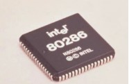
En el microprocesador 80386 y posteriores, el modo 8086 virtual, también llamado modo real virtual o VM86, permite la ejecución de aplicaciones de modo real que violan las reglas bajo control de un sistema operativo de modo protegido. Era usado para ejecutar programas DOS en Microsoft Windows/386, Windows 3.x, Windows 95, Windows 98, Windows Me, y OS/2 2.x y más adelante, a través de las máquinas DOS virtuales, también en SCO UNIX a través de Merge, y en Linux por medio de dosemu.
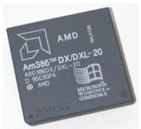
El reloj de una computadora se utiliza para dos funciones principales:
1. Para sincronizar las diversas operaciones que realizan los diferentes subcomponentes del sistema informático.
2. Para saber la hora. El reloj físicamente es un circuito integrado que emite una cantidad de pulsos por segundo, de manera constante. Al número de pulsos que emite el reloj cada segundo se llama Frecuencia del Reloj.
El reloj marca la velocidad de proceso de la computadora generando una señal periódica que es utilizada por todos los componentes del sistema para sincronizar y coordinar las actividades operativas, evitando el que un componente maneje unos datos incorrectamente o que la velocidad de transmisión de datos entre dos componentes sea distinta.
Se conoce como reset a la puesta en condiciones iniciales de un sistema. Este puede ser mecánico, electrónico o de otro tipo. Normalmente se realiza al conectar el mismo, aunque, habitualmente, existe un mecanismo, normalmente un pulsador, que sirve para realzar la puesta en condiciones iniciales manualmente. En el ámbito de códigos binarios, trata de poner a 0, así como set, poner a 1. resetearlo (reset).
Un estado de espera es una situación en la que el procesador de la computadora experimenta un retraso, principalmente cuando accede a la memoria externa o a un dispositivo que responde lentamente. Por lo tanto, los estados de espera se consideran un desperdicio en el rendimiento del procesador. Sin embargo, los diseños modernos intentan eliminar o minimizar los estados de espera.